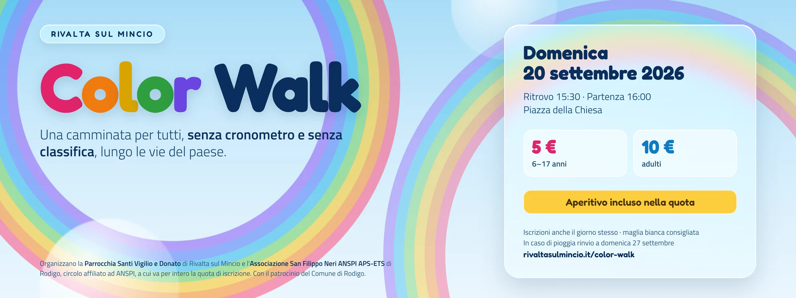

Domande agli organizzatori
Quello che è stato deciso, quello che resta da confermare e qualche cosa che non torna. Questa terza versione tiene conto degli appunti organizzativi completi arrivati il 1° settembre e dei dieci loghi arrivati il 2: le sette cose da chiudere si sono chiuse quasi tutte, il sito è stato riscritto di conseguenza, e restano aperti dieci punti — più alcuni che gli appunti non toccano.
Cosa è stato deciso
Le sette cose «da chiudere domani» della seconda versione. Sei si sono chiuse con gli appunti del 1° settembre, una resta in piedi.
- La quota. Chiusa: 10 € per i maggiorenni, 5 € dai 6 ai 17 anni, gratis sotto i 6. Il conto di don Andrea — circa 5 € di materiale a testa — regge con i bambini a pareggio e gli adulti a margine.
- L'euro di commissioni. Chiusa: sul sito non si nomina più. Le trattenute del circuito di pagamento sono un costo dell'organizzazione, non una voce a carico di chi si iscrive. Quanto costa davvero è qui sotto.
- L'aperitivo. Chiusa: è per tutti, non si prenota, ed è compreso nella quota insieme a tutto il cibo degli sponsor. Lo allestiscono il chiosco del Don con AVIS, che lo offre, Pizzangolo per le teglie di pizza e — da confermare — Marchini per pane e grissini.
- L'orario. Chiusa il 1° settembre: ritrovo 15:45, partenza 16:00, ovunque. Resta scoperta l'ora di chiusura, e serve a chi deve venire a prendere qualcuno.
- La dichiarazione al posto del tesseramento. Chiusa: ognuno è responsabile di sé stesso, e il maggiorenne che si iscrive è responsabile dei minori a suo carico che iscrive con sé. Per iscriversi bisogna avere 18 anni. È scritta nel modulo online, nel regolamento al punto 7 e sul modulo cartaceo, dove si firma.
- L'ente responsabile. Chiusa: Associazione San Filippo Neri ANSPI APS-ETS di Rodigo, C.F. 93061070202, legale rappresentante Andrea Grandi. I tre nomi di persona sono spariti da regolamento, informativa privacy, pagina di iscrizione e locandina.
- Su che conto arrivano i soldi e come passano ad ANSPI: ancora aperta. Gli appunti dicono che il denaro lo gestisce il Don a nome di ANSPI in qualità di presidente, ma le iscrizioni online le incassa Stripe su un conto che va indicato. Serve nero su bianco: intestazione del conto, e come e quando l'incasso passa all'associazione.
Cosa è cambiato sul sito
Le decisioni degli appunti contraddicevano il sito in otto punti. Sono stati riscritti tutti il 2 settembre: pagina di iscrizione, regolamento, mail di conferma, elenco iscritti, locandina e PDF.
| Cosa | Prima diceva | Adesso dice |
|---|---|---|
| Assicurazione | «la quota comprende la copertura assicurativa», in quattro punti | non è prevista alcuna assicurazione; si cammina sotto la propria responsabilità |
| Quota | 10 € a persona + 1 € di commissioni | 10 € maggiorenni · 5 € dai 6 ai 17 · gratis sotto i 6 |
| Chi si iscrive | una persona per volta, minori iscritti da un genitore | un maggiorenne, che aggiunge i minori a suo carico nella stessa iscrizione |
| Maltempo | «si svolge con qualsiasi condizione meteo» | se piove si rinvia a sabato 26 settembre, iscrizione valida |
| Iscrizione sul posto | «ci si iscrive solo online» | online fino al 18, oppure il giorno stesso col modulo cartaceo e in contanti |
| Animali, passeggini, pattini | vietati | ammessi, sotto la responsabilità di chi li porta |
| Gravidanza | fra i motivi per non partecipare | nessuna esclusione: resta l'avvertenza sulle polveri, la valutazione è personale |
| Foto | si poteva chiedere di non comparire | chi non vuole comparire nelle fotografie non partecipa |
| Titolare dei dati | tre nomi di persona | Associazione San Filippo Neri ANSPI APS-ETS di Rodigo |
| Indirizzo di residenza | chiesto nel modulo | tolto: senza polizza non serviva a niente |
| Data di nascita | non chiesta | chiesta, e confrontata col codice fiscale |
| Loghi | tre — ANSPI, Comune, .ap | undici, con Polizia Locale, AVIS, Pizzangolo, Marchini, Storti, Farmacia Tona, Fiordiloto, Non Solo Lady |
| Percorso | «comunicato via email» | le 17 vie in ordine su /color-walk; le sette postazioni restano da definire |
È nato anche un modulo cartaceo stampabile — una A4 con dati, minori a carico, quote e la dichiarazione da firmare — per le iscrizioni sul posto. Senza assicurazione, quella firma è l'unica cosa scritta che dice chi si è assunto cosa: va stampata in un numero di copie sufficiente e conservata.
Tre cose da guardare bene
Non sono obiezioni alle decisioni prese: sono conseguenze che conviene avere davanti, e una svista.
Negli appunti «Marazzi» compare fra gli sponsor confermati e «Non Solo Lady» fra quelli da verificare, come se fossero due. Sono lo stesso posto: Non Solo Lady, parrucchiere di Marco Marazzi, Piazza Chiesa 1b — è così che risulta nell'elenco delle attività del paese e in OpenStreetMap. Sulla striscia dei loghi ne è stato messo uno solo, col nome dell'insegna — ed è il logo arrivato il 2 settembre, il profilo bianco su nero. Confermato: non ci sono due sponsor da mettere, ce n'è uno.
Il circuito di pagamento trattiene 1,5% + 0,25 € su ogni incasso (carta europea). Adesso che la quota è tonda, quello che arriva in cassa è 9,60 € su 10 e 4,67 € su 5. Su 200 adulti sono 80 € che non entrano, su 100 bambini altri 33 €. Non è un problema — chi organizza ha deciso che è un costo dell'organizzazione, e con l'aperitivo offerto il conto torna lo stesso — ma va messo nel bilancio della giornata, perché nessuna pagina del sito lo dice più. Le iscrizioni pagate in contanti sul posto non hanno questa trattenuta: arrivano intere.
Una manifestazione su strade urbane, con attraversamenti chiusi e trecento persone, senza copertura per i partecipanti né responsabilità civile verso terzi, è un'esposizione reale per chi organizza — e non la copre una spunta su un modulo. La decisione è di ANSPI e il sito la esegue per intero: quello che il sito garantisce è di non lasciar intendere da nessuna parte una copertura che non c'è, cosa che invece faceva in quattro punti fino a ieri. Vale la pena chiedere a don Andrea se l'affiliazione ANSPI porta con sé una polizza di responsabilità civile dell'ente: se c'è, cambia il quadro e va scritta.
I dieci punti da verificare
Quattro punti della lista precedente si sono chiusi coi loghi del 2 settembre — Marchini, Storti, Non Solo Lady e la Polizia Locale — e al loro posto ne sono nati altri, perché un logo che arriva porta con sé le sue domande.
- Marchini: confermato il 2 settembre, ed è il Panificio Marchini dal 1923. Resta da sapere cosa fornisce esattamente: grissini, pane, focacce?
- Storti: confermato il 2 settembre — Storti Salumi. Anche qui resta da sapere cosa mette.
- Non Solo Lady: confermato, ed è la stessa cosa di Marazzi: sul materiale va il nome dell'insegna, una volta sola.
- Polizia Locale Mantova Ovest: chiusa il 2 settembre. Entra fra i loghi, l'autorizzazione ce l'ha Elena Colla, e la formula è quella che il Comune vuole (qui sotto). Resta la parte operativa: chi tiene materialmente i tre incroci il 20 — agenti, volontari, quanti.
- Farmacia Tona: il logo c'è; restano i contatti, il biglietto da visita è andato perso.
- Le sette postazioni di colore: dove stanno esattamente lungo le diciassette vie. Sul sito adesso c'è il giro completo e la nota che le postazioni sono sette; la posizione si promette via email agli iscritti, quindi va decisa prima del 18.
- La modulistica: il modulo cartaceo è pronto e stampabile. Va letto da chi risponde dell'evento e approvato così com'è, o corretto.
- La formulazione del patrocinio: chiusa il 2 settembre. L'autorizzazione è di Elena Colla, e il Comune vuole essere citato esattamente così: «Con il patrocinio del Comune di Rodigo e la collaborazione della Polizia Locale Mantova Ovest». La frase è già sul sito, nel regolamento e sul modulo cartaceo — parola per parola, e non va riscritta a orecchio. Manca solo sulla locandina pubblicata, che è ferma: vedi il punto qui sotto.
- I file dei loghi: arrivati tutti e otto il 2 settembre, e online. Il blocco in fondo a /color-walk è stato rifatto a tre fasce — chi organizza, chi dà il patrocinio, chi mette il cibo — perché un patrocinio non è una sponsorizzazione e in fila con le pizzerie si leggerebbe come tale. Restano da mettere sulla locandina, che è ferma.
- L'ora di chiusura della giornata, e su che conto arrivano i soldi delle iscrizioni online.
Per don Andrea Grandi — ANSPI
Quello che resta da chiedere adesso che tesseramento e assicurazione sono decisi. Le domande della seconda versione che gli appunti hanno già chiuso non sono più qui.
- L'affiliazione ANSPI del circolo porta con sé una polizza di responsabilità civile dell'ente verso terzi, indipendente dal tesseramento dei partecipanti? Se sì, copre i danni a passanti, auto e vetrine lungo il percorso?
- La dichiarazione di responsabilità come è scritta oggi — nel regolamento al punto 7 e sul modulo cartaceo — va bene? C'è un testo già collaudato che ANSPI preferisce?
- I moduli cartacei firmati: chi li conserva, per quanto tempo e dove?
- L'evento va comunicato ad ANSPI entro una scadenza? Il circolo di Rivalta è affiliato per il 2026?
- Inquadramento contabile: attività istituzionale del circolo o raccolta fondi con limiti d'importo? Serve una ricevuta dell'associazione per l'incasso online?
- L'aperitivo al chiosco: serve una notifica sanitaria o una SCIA temporanea? Cambia qualcosa se le bevande le offre AVIS e non l'organizzazione?
- Infortunio il giorno stesso: chi chiama chi, e cosa si scrive. Senza polizza serve comunque una procedura, non l'improvvisazione.
- Volontari: devono essere maggiorenni o tesserati? Chi è il referente ANSPI presente il 20?
- Il conto su cui arrivano le iscrizioni online, intestato a chi, e come passa l'incasso all'associazione.
Per Rebecca Zovi — organizzazione
Le domande sul come gira la giornata. Anche qui restano solo quelle che gli appunti non hanno chiuso.
Da chiudere presto
- L'ora di chiusura della giornata: serve a chi viene a prendere qualcuno, e alla locandina.
- Le sette postazioni di colore: dove. La mail agli iscritti le promette «nei giorni prima», quindi vanno decise entro il 18.
- La lunghezza del percorso: le diciassette vie sono online, i chilometri no. Basta misurarli una volta.
- Gli attraversamenti: la richiesta alla Polizia Locale per Via Settefrati, Via Garibaldi e Via Francesca è partita? Chi tiene gli incroci — vigili, volontari, quanti?
- Le sacche: quante, di che tipo, chi le ordina, consegnate dove ed entro quando. Sono il gadget al posto delle magliette, e vanno esserci il 20.
- Il tetto dei 300: chi lo controlla il giorno stesso, con le iscrizioni sul posto che si sommano a quelle online? La pagina /iscritti conta le persone e non i pagamenti, ma i cartacei li conta solo chi sta al banco.
- Il banco delle iscrizioni in piazza: chi ci sta, con quale cassa per i contanti, quante copie del modulo cartaceo stampate.
Restano da decidere
- Locandina: è aggiornata con le quote nuove e il rinvio del 26. Mancano ancora pale e stemmi delle contrade e i loghi. Quante copie di carta, dove si attaccano, entro quando.
- Presidio sanitario o ambulanza: previsto? Chi lo organizza? Senza assicurazione pesa di più, non di meno.
- Manifestazione su strada: serve l'avviso a Prefettura o Questura? Protezione civile? Chi presenta cosa, e con quanto anticipo?
- Bagni chimici, punti acqua, raccolta rifiuti e pulizia del paese dopo: a chi tocca.
- Musica e service audio: chi se ne occupa? La SIAE la paga chi?
- Foto: c'è un fotografo? Chi le pubblica e dove. Il regolamento adesso dice che chi non vuole comparire non partecipa: è una cosa che va detta anche a voce, in piazza, prima di partire.
- Volontari: quanti, per quali compiti — postazioni di colore, incroci, ritiro sacche, aperitivo, pulizia — come li troviamo, quando il briefing.
- La casella color-walk@rivaltasulmincio.it: chi la legge, e ogni quanto? È l'indirizzo a cui rispondono adesso le mail di conferma, e quello scritto nel regolamento e sul modulo cartaceo.
- La pagina /iscritti: chi ha la chiave? Chi stampa l'elenco per il banco delle sacche? Il CSV esce già con una riga per persona, minori compresi.
- I conti della giornata: quote in entrata, meno polveri, sacche, service, bagni, stampe e le trattenute del circuito di pagamento. Chi anticipa? Torna?
- Il post su Facebook: diceva ancora solo «dalle ore 16:00» e non nominava il ritrovo delle 15:45. Va corretto lì, insieme alle quote nuove.
Proposte, se avanza tempo
- Un recapito di emergenza nel modulo — un nome e un numero validi per il giorno della camminata.
- Sulla pagina, il conteggio dei posti rimasti sui 300 e la data di chiusura bene in vista.
- Un promemoria automatico agli iscritti due o tre giorni prima: postazioni, cosa mettersi, meteo, orari.
- Una manciata di domande e risposte sulla pagina: cosa indossare, bambini, cani, parcheggio, iscrizione sul posto.
- Un numero di telefono di riferimento per il giorno della camminata, pubblicato sulla pagina.
- Al ritiro della sacca, l'elenco stampato con la spunta delle presenze: serve a sapere quante persone ci sono davvero in giro per il paese.
Rivalta sul Mincio, 2 settembre 2026 — terza versione, aggiornata sugli appunti organizzativi completi del 1° settembre; la seconda è del 31 agosto, la prima del 27.
Per correzioni o aggiunte: color-walk@rivaltasulmincio.it.